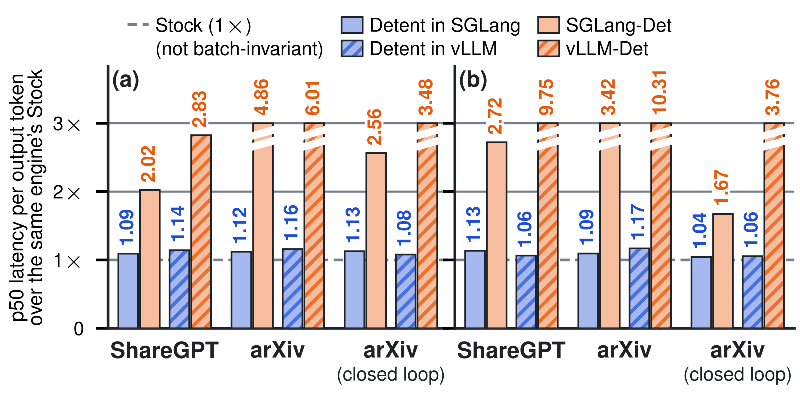
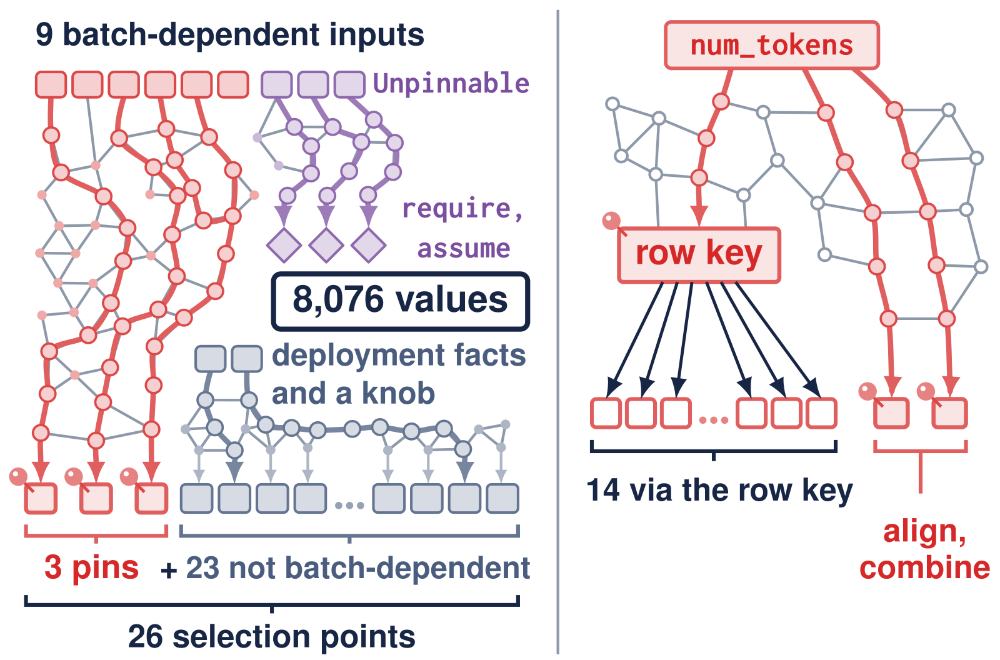
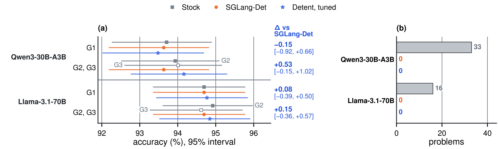
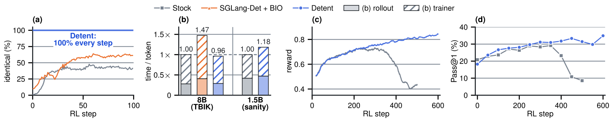

目录 · 7 节
1加法顺序固定了，挑 kernel 的那一步还在看批2哪些 kernel 比特一致，只能实测，而且测不完3钉哪几个值：把选择逻辑写成程序，求一个最小割4钉成什么值：最快的 tuple 跟着负载走5比特测试全过，延迟多一成左右，准确率持平6同一组 kernel 和 tuple 放到训练端，logprob 就对齐了7一致性只在同一部署、同一 tuple 内成立在 Detent 这篇论文里，批次改变输出比特的入口是引擎选 kernel 的那一步，所以只需钉死选择逻辑读到的几个值，快 kernel 可以留下。
用 SGLang 的标准设置（论文称 Stock）跑 GSM8K 的 1,319 道题，题目不变，只改并发。Qwen3-30B-A3B（下文简称 Qwen）上有 790 题的文本变了，33 题的答案变了，说明同批请求一路影响到了最终答案。到了 RL 这边，训练端重算 rollout 只有 1.0–47.7% 的 token 比特一致，这种不一致本身就能让训练崩溃。
SGLang 和 vLLM 的确定性模式（SGLang-Det、vLLM-Det）能修好这件事，办法是每个算子只留一个保守 kernel。逐负载的每输出 token 延迟因此达到 Stock 的 1.59–6.34 倍和 2.83–10.3 倍，意味着比特一致是用几倍延迟换来的。
Detent 在 4 张 H100 上跑 Qwen 和 Llama-3.1-70B（下文简称 Llama），两个引擎都通过全部 batch-invariance 测试。按负载调优后，p50 的几何平均是 Stock 的 1.08–1.11 倍。它做的事可以拆成两问：钉哪几个值，钉成什么值。

加法顺序固定了，挑 kernel 的那一步还在看批
浮点加法不满足结合律，同一组数换个分组相加，舍入就可能不同。已有的 batch-invariant kernel 解决的是 kernel 内部的问题：参数定下来之后，一个请求的数按什么顺序相加与批无关。
可参数是引擎按批定的。FA3（FlashAttention-3）的 split 数和 tile 宽取决于批；fused MoE 取配置表里最接近批 token 数的那一行；all-reduce 按这批要发的字节数选算法。每次选择都决定了请求的数怎样分组相加，而两个算同一个和的 kernel 舍入可能不同。
跨步也有同样的事。prefix cache 和调度器决定请求的 token 怎么分到 prefill 和 decode：先 prefill 100 再 decode 50，和一次 prefill 150，key 的分组不同。RL 正好踩中这一点，rollout 先 prefill 再 decode，训练则一次 prefill 完。
确定性模式干脆取消选择，于是 SGLang-Det 的 decode step 在五个多卡部署上是 Stock 的 1.36–2.00 倍。那能不能只留下彼此比特一致的快 kernel，让引擎继续在它们之间挑？
哪些 kernel 比特一致，只能实测，而且测不完
head dimension 为 64 时，FA3 的两种 tile 宽在 32 个 logprob 中有 31 个不一致。Qwen 上，18 个调好的 MoE 配置却与 SGLang-Det 写死的那个比特一致。源码上看不出这两种情况的区别，说明只能实测。实测又测不完，FA3 有 18,472 种配置，各测一次要占四卡节点约 4.8 天。
所以 Detent 完全不依赖两个 kernel 彼此一致。作者的观察是，很多快 kernel 自身就是 batch-invariant 的，批只能通过「选谁」这一步影响请求的比特。kernel 的不变性由用户提供，选择的不变性由 Detent 保证，合起来就是端到端不变性，前提是每个请求的输出在数学上只是自身输入的函数。
选择的不变性靠三个概念落地。pin 是选择程序里被替换成常量的值，比如 FA3 的 split 数。knob 是没有输入决定的部署设置，比如 all-reduce 的 workspace 用 push 还是 pull。commitment tuple 给每个 pin 一个合法值、每个 knob 一个设置，部署前定好，服务中不变。
| 算子 | Stock | 确定性模式 | Detent |
|---|---|---|---|
| FA3 attention | 按批定 split 数和 tile 宽 | 不切分 | 保留 split-KV；重建的 FA3 让一个请求的 split 边界不随批变化，split 数被 pin 住 |
| fused MoE | 取最接近批 token 数的配置行 | 一个写死的配置 | 钉住配置行的 row key |
| all-reduce | 按批发送的字节选算法 | NCCL tree | 自写 kernel 按固定 rank 顺序求和，算法钉死 |
表里 Detent 这一列有个前提：得先知道该钉哪几个。
钉哪几个值：把选择逻辑写成程序，求一个最小割
用户把每个调用点的选择逻辑写成 SelIR，意思是 Selection IR。它是一种 DSL（领域专用语言），语法取 Python 子集，程序都是纯函数，批相关的输入做标记，返回值就是选择点。引擎服务时运行的是这段程序，solver 分析的也是它，所以在 SelIR 里钉住一个值，运行中的引擎也就钉住了。
按部署把已知量代入做部分求值后，程序变成一张依赖图。Llama 上的 FA3 有 8,076 个值、26 个选择点，其中 3 个与批相关。问题于是变成：选一组顶点钉成常量，阻断所有从批相关输入到选择点的路径，也就是一个顶点割。
把批相关的选择点全钉上当然也是割，但每多一个 pin，tuner 的搜索空间就要乘上它的候选数。solver 用最大流求加权最小割，偏好 pin 少、靠近选择点的割。MoE 最能说明差别：割落在程序内部的 row key 上，这一个 pin 固定了 16 个批相关选择点中的 14 个，整个 MoE 只要 3 个 pin，不做割要 10 个。FA3 若只做常量折叠，割有 12 个 pin 而不是 3 个。
最终 attention、all-reduce、MoE 三类选择，Llama 要钉 3、3、0 个值，Qwen 要钉 3、3、3 个，两个引擎求出来相同。这意味着 tuner 面对的只是少数几个维度。

钉的值不能乱填。VRA（Pin Value Range Analysis，分析每个 pin 能取哪些值）把候选赋值代入程序运行，检查 require 和 assume 条件在所有或抽样的输入点上是否成立。服务时新输入不满足条件，引擎直接报错停止，不会换别的 kernel。新批也不会触发重编译。
钉成什么值：最快的 tuple 跟着负载走
位置定了，取值空间依然很大，而且最快的 tuple 取决于 prefix 命中率、并发和 prompt 长度。Qwen 上联合搜索有 1,607,040 种。tuner 假设总时间可以按 kernel 家族相加：不同家族不重叠，tuple 只改每个家族选哪个 kernel，一次调用的时间只取决于调用本身和本家族的赋值。这样逐家族搜，总数降到 3,020。
这个假设实测站得住。Qwen 上家族间最大交互 δ 为 1.04%，对应逐家族选择距最优 tuple 在 2.1% 以内。Llama 的穷举网格上，tuner 只测 8.0% 的候选，平均离最优 0.04%，最差 0.75%。每家族 5 分钟预算时，调一个负载连同 worker 启动约需 10 到 20 分钟。
调优这一步的贡献很大。不调优的默认 tuple 在 SGLang 中比调优后慢至多 103%（Llama）和 1–233%（Qwen）。同样的 kernel，调优本身解释了 SGLang-Det 差距中的 1.34 倍和 1.67 倍。把 Detent 的 GEMM 和 all-reduce 换进 Stock，GPU 时间反而多 0.6%（Qwen）和 2.8%（Llama），可见接近 Stock 的原因不在这两个 kernel 更快。至于剩下的差距，作者归到两处：重建的 FA3 每次调用多 3 µs，一个 tuple 要同时服务长 prefill 和小 decode 批。
代价也在这里。Stock 每批都能自适应，tuple 不能。每类负载共用一个 tuple 时，在自己的负载上距逐负载调优只差 2.7%（Qwen）和 1.1%（Llama）。用错负载就贵了：Qwen 上拿 ShareGPT 负载的 tuple 去跑 arXiv 负载 B2，每输出 token 延迟的 p50 是在 B2 上单独调优的 tuple 的 4.17 倍。首 token 中位时间也从 238 ms 涨到 4.75 s。流量漂移的代价就是这种错配。
比特测试全过，延迟多一成左右，准确率持平
测试电池有 26 格，温度 0 下比较前 16 个输出 logprob 的比特，覆盖重跑同批、换同批请求、换行、改 prefix 命中。Detent 和两个确定性模式全部通过，另加的 9 格强测试也全过。Stock 在 SGLang 中失败 9 格（Llama）和 5 格（Qwen），说明这套测试测得出批的影响。
逐负载看，Detent 的 p50 是 Stock 的 1.01–1.22 倍。SGLang-Det 的 p50 几何平均是 Detent 的 2.4–2.6 倍，vLLM-Det 是 3.4–5.7 倍，意味着同样拿到比特一致，Detent 省下了一大半延迟。
单个负载上还出现过 6.1 和 9.2 倍，那来自队列持续增长的运行，不能当常态看。让这些配置在自身最大吞吐的 0.67–1.0 下服务，差距仍有 2.0–2.3 倍，所以优势不全是排队造成的。
GSM8K 上 Detent 减 SGLang-Det 的准确率差为 −0.15 到 +0.53 个百分点，McNemar 检验 p≥0.14。更有信息量的是答案跟着谁变。SGLang-Det 的文本从不变。Detent 在 G2、G3 用不同 tuple，文本却相同；G1 的 tuple 切分 KV，文本可以与 G2 不同，所以下图 (b) 中 Detent 的 0 比较的是 G2 与 G3。
Detent 的答案跟着 tuple 走，不跟着负载走。

作者还对比了 LLM-42，它校验快路径 token、错了回滚，可以只让一部分请求确定。Llama-3.1-8B、单张 H100 的在线实验里，LLM-42 只让 2% 请求确定，中位延迟也是全部请求确定的 Detent 的 1.15–1.20 倍，说明在这个设置下按比例确定没有换来速度优势。
离线 arXiv 上情况相反，LLM-42 在确定比例不超过 20% 时吞吐高 0.4–2.6%。这里的 LLM-42 是作者移植到自己 SGLang 基线的版本，预注册的离线校验差 44% 未通过，校验方式是看到数据后修正的，所以我会把离线这组数字看得保守一些。
同一组 kernel 和 tuple 放到训练端，logprob 就对齐了
论文的论证是，训练端跑与服务端相同的 kernel 和 tuple，两者只差批，所以 logprob 能对上。Detent 只接受带种子的温度采样，论文说这也定住了采样出的 token。 Hoot 说

- kernel 和 tuple 定住计算路径。pin 挡住了批到选择点的每条路径，kernel 自身的不变性由用户提供。
- 参数 M 是这次比较的前提。训练端每一步用当时的参数重算，比特相同才有意义；参数一变，logprob 本来就该变，那不是批造成的差异。
- 种子 s 这里只记论文的结论和实测。论文说只接受带种子的采样也定住了采样出的 token；512 条种子 rollout 在换批、换 cache 切分下逐比特重放。
- 只接受带种子的温度采样，是 RL 这边单独加的补丁。服务实验用的是贪心解码。
- 读 Stock 这一行要留意：它的训练端用 transformers，所以它和 rollout 的差别不只是批。
用论文的式子看，一次请求的输出是 y=F(x,s;M,D,T;B)：x 是 prompt，s 是种子，M 是模型代码和权重，D 是部署，T 是 tuple，B 是批状态。图里两条路径只有 B 不同。 出处: 论文 §3（式 2、selection batch invariance、训练端与服务端只差批的论证）；§7（RL 的采样补丁）；§8.1（服务实验用贪心解码）；§8.6（种子 rollout、训练端比特一致、Stock 用 transformers 训练）
先看 rollout 自身。512 条温度 1 的 GSM8K rollout 在换批、换 cache 切分下逐比特重放，并与重打分一致。1,024 输出 token 时，吞吐是 Stock 的 0.84–0.92 倍、SGLang-Det 的 1.15–1.35 倍。SGLang-Det 的种子 rollout 只要同批有一个贪心或 top-p 请求，20 格全变，说明确定性模式并不自动保住种子采样。
再看训练端。沿用 TBIK（固定归约树、输出跨 TP 度也一致的 kernel 工作）的 on-policy 协议，在 Llama-3.1-8B 上训练 100 步，学习率降到 1e-6。每一步，Detent 的训练端用当时的参数重算 rollout 那些 token 的 logprob，和 rollout 时记录的 logprob 逐比特相同，所以两者之间的 KL 为 0。同样的比较，Stock 只有 1.0–47.7% 的 token 一致，SGLang-Det 配 batch-invariant operators 的训练端（BIO）是 9.9–63.9%。
时间上，这个协议下每生成 token 的 rollout 是 Stock 的 1.03 倍，整步在 4% 以内，SGLang-Det 加 BIO 是 1.47 倍，所以对齐几乎不额外花时间。
后果最直观的是 BF16 GRPO。Qi et al. 的 sanity test 用 DeepSeek-R1-Distill-Qwen-1.5B，一卡服务一卡训练。Stock 的奖励从 299 步的 0.733 跌到 500 步的 0.436，AIME 2024 的 Pass@1 从 29.2% 跌到 8.5%，说明崩溃落到了模型能力上。Detent 训练端重算的 logprob 与 rollout 记录的 logprob 之间，KL 到 600 步保持 0，奖励升到 0.843，每 token 时间是 Stock 的 1.18 倍。

一致性只在同一部署、同一 tuple 内成立
输出只在同一部署、模型和 tuple 内一致，跨 TP 度还需要 TBIK 那样的 TP-invariant kernel。kernel 自身的不变性由用户负责，每段选择逻辑也要用户手写成 SelIR。
换部署的成本倒不高。论文再加 8 个只靠 spec 求解的部署，TP 度从 1 到 8，head dimension 从 64 到 256，全部 batch-invariant。调优后延迟在两类负载上是 Stock 的 0.97–1.09 倍和 1.01–1.13 倍，说明这套流程没有绑死在主部署上。
回到开头两问：钉哪几个值由 solver 在每个部署上答一次，钉成什么值由 tuner 按负载来答。前一问换来比特一致，后一问换来接近 Stock 的速度，流量一漂移，要重答的是后一问。
读完这篇，你觉得
夜读鸮记下了，谢谢你的反馈。
点一下即可，无需登录；再点一次撤回。只统计匿名次数，不记录你是谁。
讨论
欢迎补充实验细节、复现经验或不同看法。需 GitHub 登录。
正在加载讨论…